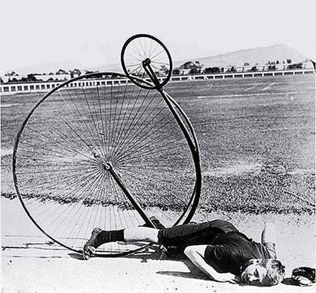
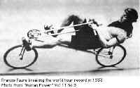

It is the first reliable claim for a practically used bicycle, basically the first commercially successful two-wheeled, steerable, human-propelled machine commonly called a velocipede, nicknamed hobby-horse or dandy horse.
He built, in 1869, two versions of a two-wheeled velocipede with levers and rods tossing a crank on the rear wheel.
 Eugène Meyer, a Frenchman, invented the High-Bicycle design and fashioned the wire-spoke tension wheel. They were dangerous due to the risk of headers
Harry John Lawson (also called Henry) in 1876,[5] although other bicycles which fit the description had been developed earlier.
Elit sed do eiusmod tempor incididunt ut ret dolore mag.
Francis Faure, broke the record and rode a recumbent 28 miles (45 km) in an hour. In 1934 the UCI (Union Cyclist International) outlawed recumbent bicycles, as a unfair advantage.
